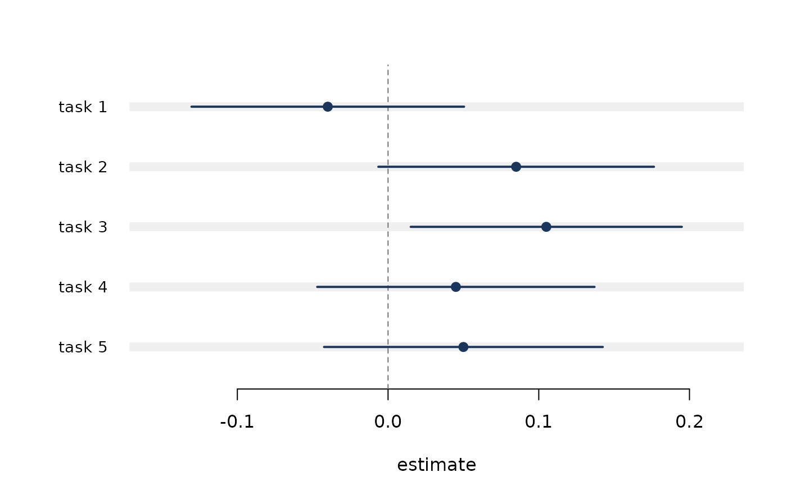

Draws the results as a horizontal interval plot, the format this package
exists to make routine. Accepts the same input as ev_table(), and also
plots ev_rank() and ev_multi() objects directly.
Arguments
- x
An
evalkitresult, a list of them, or a data frame fromev_table().- ...
Further results, or graphical parameters passed to
graphics::plot().- reference
Optional vertical reference line, for example
0for differences. DefaultNULL, which draws none.- xlab, main
Axis and title labels.
- col
Colour for points and intervals.
See also
Other reporting:
ev_table()
Examples
set.seed(15)
runs <- lapply(1:5, function(i) {
d <- data.frame(
q = rep(1:200, 2),
m = rep(c("new", "old"), each = 200),
correct = rbinom(400, 1, rep(c(0.72, 0.68), each = 200))
)
ev_paired(as_eval(d, score = correct, item = q, model = m),
model_a = "new", model_b = "old")
})
names(runs) <- paste0("task ", 1:5)
ev_plot(runs, reference = 0)
